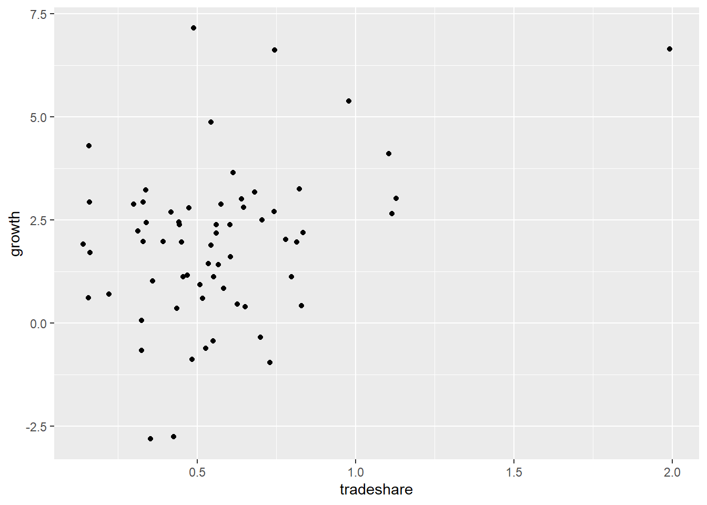
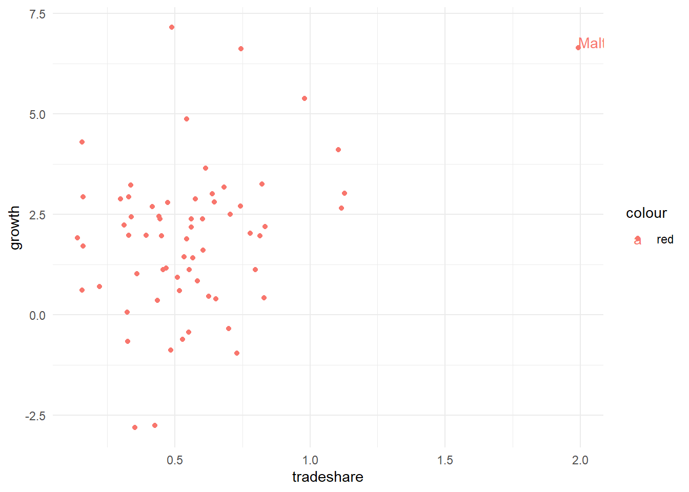
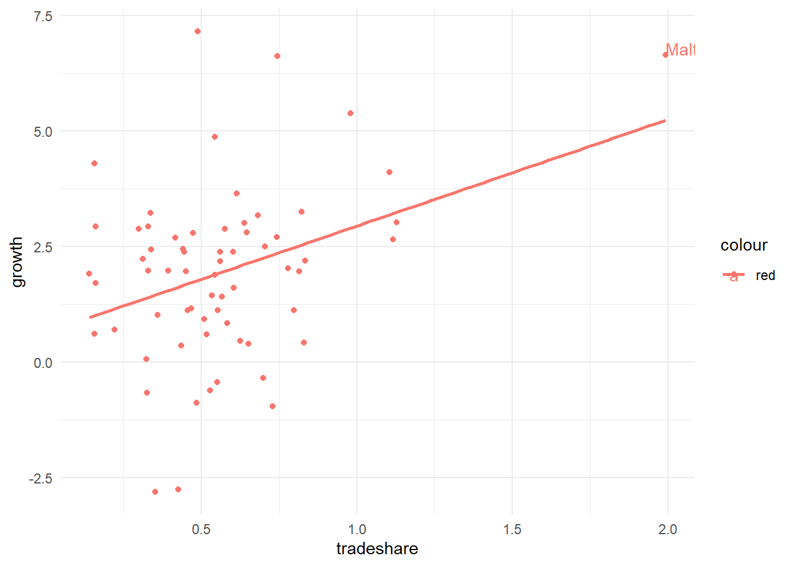

Code
library(tidyverse)
library(haven)
library(kableExtra)
growth <- read_dta("Growth.dta")
library(modelsummary)
library(rstatix)Exclude Malta and carry out the following exercises. a. Run a regression of Growth on TradeShare, YearsSchool, Rev_Coups, Assassinations, and RGDP60. Construct a 95% confidence interval for the coefficient on TradeShare. Is the coefficient statistically significant at the 5% level? b. Test whether, taken as a group, YearsSchool, Rev_Coups, Assassinations, and RGDP60 can be omitted from the regression. What is the p-value of the F-statistic?
Simple Linear Regression
library(tidyverse)
library(haven)
library(kableExtra)
growth <- read_dta("Growth.dta")
library(modelsummary)
library(rstatix)Get an over of data as follows:
glimpse(growth)Rows: 65
Columns: 8
$ country_name <chr> "India", "Argentina", "Japan", "Brazil", "United States"…
$ growth <dbl> 1.91516793, 0.61764508, 4.30475903, 2.93009663, 1.712264…
$ oil <dbl> 0, 0, 0, 0, 0, 0, 0, 0, 0, 0, 0, 0, 0, 0, 0, 0, 0, 0, 0,…
$ rgdp60 <dbl> 765.9998, 4462.0015, 2953.9995, 1783.9999, 9895.0039, 95…
$ tradeshare <dbl> 0.1405020, 0.1566230, 0.1577032, 0.1604051, 0.1608150, 0…
$ yearsschool <dbl> 1.45, 4.99, 6.71, 2.89, 8.66, 0.79, 3.80, 2.97, 3.02, 0.…
$ rev_coups <dbl> 0.13333334, 0.93333334, 0.00000000, 0.10000000, 0.000000…
$ assasinations <dbl> 0.86666667, 1.93333328, 0.20000000, 0.10000000, 0.433333…ggplot(growth)+aes(x=tradeshare,y=growth)+geom_point()
There seems an outlier and lets find out which value it is. Secondly what happens if we exclude this value as we have discussed OLS is sensitive to outliers.
ggplot(growth)+aes(x=tradeshare,y=growth,color="red",label=country_name)+geom_point()+
geom_text(aes(label=ifelse(tradeshare>1.5,as.character(country_name),'')),hjust=0,vjust=0)+theme_minimal()
We observe that Malta is an outlier. Does this outlier affects OLS results it is very sensitive to outliers. We run both models : one with having Malta included and other by excluding Malta to analyze impact of tradeshare on growth rate.
ggplot(growth)+aes(x=tradeshare,y=growth,color="red",label=country_name)+geom_point()+
geom_text(aes(label=ifelse(tradeshare>1.5,as.character(country_name),'')),hjust=0,vjust=0)+theme_minimal()+geom_smooth(method = "lm",se=FALSE)`geom_smooth()` using formula 'y ~ x'
Growth<-growth %>% filter(country_name!="Malta")
mod_malta<-lm(growth~tradeshare,data=growth)
mod_womalta<-lm(growth~tradeshare,data=Growth)
models<-list(mod_malta,mod_womalta)
modelsummary(models,estimate = "{estimate}{stars}", output="huxtable")| Model 1 | Model 2 | |
|---|---|---|
| (Intercept) | 0.640 | 0.957 |
| (0.490) | (0.580) | |
| tradeshare | 2.306** | 1.681+ |
| (0.773) | (0.987) | |
| Num.Obs. | 65 | 64 |
| R2 | 0.124 | 0.045 |
| R2 Adj. | 0.110 | 0.029 |
| AIC | 264.1 | 260.1 |
| BIC | 270.6 | 266.6 |
| Log.Lik. | -129.058 | -127.038 |
| F | 8.892 | 2.898 |
| RMSE | 1.76 | 1.76 |
Malta and carry out the following exercises.glimpse(Growth)Rows: 64
Columns: 8
$ country_name <chr> "India", "Argentina", "Japan", "Brazil", "United States"…
$ growth <dbl> 1.91516793, 0.61764508, 4.30475903, 2.93009663, 1.712264…
$ oil <dbl> 0, 0, 0, 0, 0, 0, 0, 0, 0, 0, 0, 0, 0, 0, 0, 0, 0, 0, 0,…
$ rgdp60 <dbl> 765.9998, 4462.0015, 2953.9995, 1783.9999, 9895.0039, 95…
$ tradeshare <dbl> 0.1405020, 0.1566230, 0.1577032, 0.1604051, 0.1608150, 0…
$ yearsschool <dbl> 1.45, 4.99, 6.71, 2.89, 8.66, 0.79, 3.80, 2.97, 3.02, 0.…
$ rev_coups <dbl> 0.13333334, 0.93333334, 0.00000000, 0.10000000, 0.000000…
$ assasinations <dbl> 0.86666667, 1.93333328, 0.20000000, 0.10000000, 0.433333…gr_model<- lm(growth~tradeshare+yearsschool+rev_coups+assasinations+rgdp60,data=Growth)
modelsummary(gr_model)| Model 1 | |
|---|---|
| (Intercept) | 0.627 |
| (0.783) | |
| tradeshare | 1.341 |
| (0.960) | |
| yearsschool | 0.564 |
| (0.143) | |
| rev_coups | −2.150 |
| (1.119) | |
| assasinations | 0.323 |
| (0.488) | |
| rgdp60 | 0.000 |
| (0.000) | |
| Num.Obs. | 64 |
| R2 | 0.291 |
| R2 Adj. | 0.230 |
| AIC | 249.0 |
| BIC | 264.1 |
| Log.Lik. | −117.489 |
| F | 4.764 |
| RMSE | 1.52 |
95% confidence interval can be calculated as follows:
-0.5809558, 3.2625945
RGDP60 can be omitted from the regression. What is the p-value of the F-statistic?
library(car)Loading required package: carData
Attaching package: 'car'The following object is masked from 'package:dplyr':
recodeThe following object is masked from 'package:purrr':
somelinearHypothesis(gr_model,c("yearsschool=0","rev_coups=0","assasinations=0","rgdp60=0"))Linear hypothesis test
Hypothesis:
yearsschool = 0
rev_coups = 0
assasinations = 0
rgdp60 = 0
Model 1: restricted model
Model 2: growth ~ tradeshare + yearsschool + rev_coups + assasinations +
rgdp60
Res.Df RSS Df Sum of Sq F Pr(>F)
1 62 198.53
2 58 147.31 4 51.217 5.0414 0.001481 **
---
Signif. codes: 0 '***' 0.001 '**' 0.01 '*' 0.05 '.' 0.1 ' ' 1